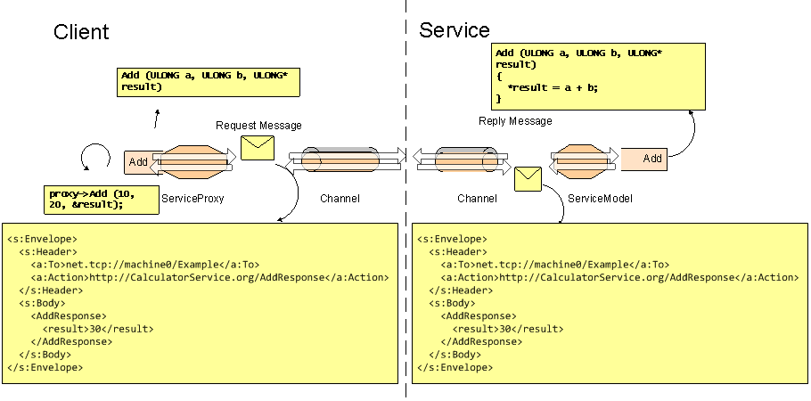
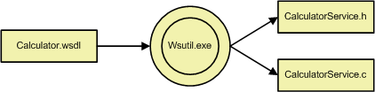
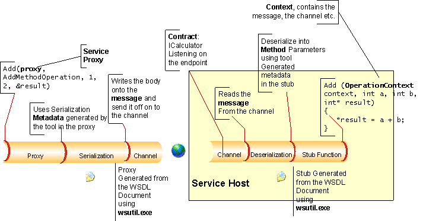

title: Service Model Layer Overview description: The WWSAPI Service Model API models the communication between a client and a service as method calls, rather than as data messages. ms.assetid: a1ed1e3c-94ae-4383-9251-83caf2e3ebf3 keywords:
The WWSAPI Service Model API models the communication between a client and a service as method calls, rather than as data messages. In contrast to the channel layer, which supports more traditional message exchanges between client and service, the Service Model automatically manages communication by means of a service proxy on the client and a service host on the service. This means that the client calls generated functions and the server implements callbacks.
For example, consider a calculator service which performs addition and subtraction on two numbers. Addition and subtraction are operations naturally represented as method calls.

The service model represents the communication between client and the service as declared method calls, and so conceals the communication details of the underlying channel layer from the application, making the service easier to implement.
A service must be specified in terms of its message exchange patterns as well as its network data representation. For services, this specification is usually provided as WSDL and XML schema documents.
The WSDL document is an XML document which contains the channel binding and the message exchange patterns of the service, whereas the XML schema document is an XML document that defines the data representation of the individual messages.
For the calculator service and its addition and subtraction operations, the WSDL document might look like the following example:
<wsdl:definitions xmlns:soap="http://schemas.xmlsoap.org/wsdl/soap/"
xmlns:wsu="http://docs.oasis-open.org/wss/2004/01/oasis-200401-wss-wssecurity-utility-1.0.xsd"
xmlns:soapenc="http://schemas.xmlsoap.org/soap/encoding/" xmlns:tns="http://Example.org"
xmlns:wsa="http://schemas.xmlsoap.org/ws/2004/08/addressing" xmlns:wsp="http://schemas.xmlsoap.org/ws/2004/09/policy"
xmlns:wsap="http://schemas.xmlsoap.org/ws/2004/08/addressing/policy" xmlns:xsd="http://www.w3.org/2001/XMLSchema"
xmlns:msc="http://schemas.microsoft.com/ws/2005/12/wsdl/contract" xmlns:wsaw="http://www.w3.org/2006/05/addressing/wsdl"
xmlns:soap12="http://schemas.xmlsoap.org/wsdl/soap12/" xmlns:wsa10="http://www.w3.org/2005/08/addressing"
xmlns:wsx="http://schemas.xmlsoap.org/ws/2004/09/mex" targetNamespace="http://Example.org"
xmlns:wsdl="http://schemas.xmlsoap.org/wsdl/">
<wsdl:portType name="ICalculator">
<wsdl:operation name="Add">
<wsdl:input wsaw:Action="http://Example.org/ICalculator/Add"
message="tns:ICalculator_Add_InputMessage" />
<wsdl:output wsaw:Action="http://Example.org/ICalculator/AddResponse"
message="tns:ICalculator_Add_OutputMessage" />
</wsdl:operation>
</wsdl:portType>
</wsdl:definitions>
Likewise, its XML schema can be defined as follows:
<xs:schema xmlns:tns="http://Example.org" elementFormDefault="qualified"
targetNamespace="http://Example.org" xmlns:xs="http://www.w3.org/2001/XMLSchema">
<xs:element name="Add">
<xs:complexType>
<xs:sequence>
<xs:element minOccurs="0" name="a" type="xs:int" />
<xs:element minOccurs="0" name="b" type="xs:int" />
</xs:sequence>
</xs:complexType>
</xs:element>
<xs:element name="AddResponse">
<xs:complexType>
<xs:sequence>
<xs:element minOccurs="0" name="result" type="xs:int"
/>
</xs:sequence>
</xs:complexType>
</xs:element>
</xs:schema>
The service model provides the WsUtil.exe as a tool to process these metadata documents, converting a WSDL file into a C header and source files.

The WsUtil.exe generates header and sources for service implementation as well as client-side service operations for the client .
As with the service implementation, the client must include the generated header or headers.
#include "CalculatorProxyStub.h"
Now, The client application can create and open a service proxy to begin communication with the calculator service.
WS_ENDPOINT_ADDRESS address = {0};
WS_STRING uri= WS_STRING_VALUE(L"http://localhost/example");
address.uri = uri;
if (FAILED (hr = WsCreateServiceProxy(WS_CHANNEL_TYPE_REQUEST, WS_HTTP_CHANNEL_BINDING, NULL, NULL, 0, &serviceProxy, error)))
goto Error;
if (FAILED (hr = WsOpenServiceProxy(serviceProxy, &address, NULL, error)))
goto Error;
The application can call the Add operation on the calculator service with the following code:
if (FAILED (hr = DefaultBinding_ICalculator_Add(serviceProxy, heap, 1, 2, &result, NULL, 0, NULL, error)))
goto Error;
Please refer to the code example at HttpCalculatorClientExample for full implementation of the calculator service.
The interaction of the individual WWSAPI Service Model components within the Calculator example is as follows:

Components
Â
Â